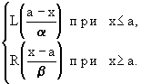

|
|
Fuzzy Technologies Lab. |
3. НЕЧЕТКАЯ И ЛИНГВИСТИЧЕСКАЯ ПЕРЕМЕННЫЕ
Понятие нечеткой и лингвистической переменных используется при описании объектов и явлений с помощью нечетких множеств.
Нечеткая переменная характеризуется тройкой <a, X, A>, гдеa - наименование переменной, Лингвистической переменной называется набор <b ,T,X,G,M>, где
X - универсальное множество (область определения a),
A - нечеткое множество на X, описывающее ограничения (т.е. m A(x)) на значения нечеткой переменной a.b - наименование лингвистической переменной; Замечание. Чтобы избежать большого количества символов
Т - множество ее значений (терм-множество), представляющих собой наименования нечетких переменных, областью определения каждой из которых является множество X. Множество T называется базовым терм-множеством лингвистической переменной;
G - синтаксическая процедура, позволяющая оперировать элементами терм-множества T, в частности, генерировать новые термы (значения). Множество TÈ G(T), где G(T) - множество сгенерированных термов, называется расширенным терм-множеством лингвистической переменной;
М - семантическая процедура, позволяющая превратить каждое новое значение лингвистической переменной, образуемое процедурой G, в нечеткую переменную, т.е. сформировать соответствующее нечеткое множество.Присвоение нескольких значений символам предполагает, что контекст позволяет разрешить возможные неопределенности.
- символ b используют как для названия самой переменной, так и для всех ее значений;
- пользуются одним и тем же символом для обозначения нечеткого множества и его названия, например терм "молодой", являющийся значением лингвистической переменной b = "возраст", одновременно есть и нечеткое множество М ("молодой").
Пример: Пусть эксперт определяет толщину выпускаемого изделия с помощью понятий "малая толщина", "средняя толщина" и "большая толщина", при этом минимальная толщина равна 10 мм, а максимальная - 80 мм.
Формализация такого описания может быть проведена с помощью следующей лингвистической переменной <b, T, X, G, M>, гдеЗамечание. Наряду с рассмотренными выше базовыми значениями лингвистической переменной "толщина" (Т={"малая толщина", "средняя толщина", "большая толщина"}) возможны значения, зависящие от области определения Х. В данном случае значения лингвистической переменной "толщина изделия" могут быть определены как "около 20 мм", "около 50 мм", "около 70 мм", т.е. в виде нечетких чисел. b - толщина изделия;
T - {"малая толщина", "средняя толщина", "большая толщина"};
X - [10, 80];
G - процедура образования новых термов с помощью связок "и", "или" и модификаторов типа "очень", "не", "слегка" и др. Например: "малая или средняя толщина", "очень малая толщина" и др.;
М - процедура задания на X = [10, 80] нечетких подмножеств А1="малая толщина", А2 = "средняя толщина", А3="большая толщина", а также нечетких множеств для термов из G(T) в соответствии с правилами трансляции нечетких связок и модификаторов "и", "или", "не", "очень", "слегка" и др. операции над нечеткими множествами вида: А Ç В, АÈ В,, CON А = А2 , DIL А = А0,5 и др.
Продолжение примера:
Функции принадлежности нечетких множеств:
"малая толщина" = А1 , "средняя толщина"= А2, " большая толщина"= А3 .
Функция принадлежности:
нечеткое множество "малая или средняя толщина" = А1ÈА1.Нечеткие числа
Нечеткие числа - нечеткие переменные, определенные на числовой оси, т.е. нечеткое число определяется как нечеткое множество А на множестве действительных чисел R с функцией принадлежности mA(x)Î[0,1], где x - действительное число, т.е. xÎR.
Нечеткое число А нормально, если mA(x)=1, выпуклое, если для любых x£y£z выполняется
mA(x)³mA(y)LmA(z).
Множество a - уровня нечеткого числа А определяется как
Аa = {x/m A(x)³a}.
Подмножество SAÌR называется носителем нечеткого числа А, если
S = {x/mA(x)>0}.
Нечеткое число А унимодально, если условие mA(x) = 1 справедливо только для одной точки действительной оси.
Выпуклое нечеткое число А называется нечетким нулем, еслиmA(0) = (mA(x)).
Нечеткое число А положительно, если "xÎSA, x>0
и отрицательно, если "xÎSA, x<0.Расширенные бинарные арифметические операции (сложение, умножение и пр.) для нечетких чисел определяются через соответствующие операции для четких чисел с использованием принципа обобщения следующим образом. Операции над нечеткими числами
Пусть А и В - нечеткие числа, и - нечеткая операция, соответствующая операции над обычными числами. Тогда
С = АB ÛmC(z)=(mA(x)LmB(y))).
Отсюда:
С = ÛmC(z)=(mA(x)LmB(y))), Нечеткие числа (L-R)-типа - это разновидность нечетких чисел специального вида, т.е. задаваемых по определенным правилам с целью снижения объема вычислений при операциях над ними.
С = Û mC(z)=(mA(x)LmB(y))),
С = Û mC(z)=(mA(x)L mB(y))),
С = Û mC(z)=(mA(x)LmB(y))),
С =Û mC(z)=(mA(x)LmB(y))),
С = Û mC(z)=(mA(x)LmB(y))).
Нечеткие числа (L-R)-типа
Функции принадлежности нечетких чисел (L-R)-типа задаются с помощью невозрастающих на множестве неотрицательных действительных чисел функций действительного переменного L(x) и R(x), удовлетворяющих свойствам:
а) L(-x)=L(x), R(-x)=R(x);
б) L(0)=R(0).
Очевидно, что к классу (L-R) функций относятся функции, графики которых имеют следующий вид:
Примерами аналитического задания (L-R) функций могут быть
L(x) = , p³0;
R(x)= , p³ 0 и т.д.
Пусть L(y) и R(y) - функции (L-R)-типа (конкретные). Унимодальное нечеткое число А с модой а (т.е. mA(a)=1) c помощью L(y) и R(y) задается следующим образом:
mA(x) = 
где а - мода; a>0, b>0 - левый и правый коэффициенты нечеткости.
Таким образом, при заданных L(y) и R(y) нечеткое число (унимодальное) задается тройкой А = (а, a, b).
Толерантное нечеткое число задается, соответственно, четверкой параметров А=(а1, a2, a, b), где а1 и a2 - границы толерантности, т.е. в промежутке [а1,a2] значение функции принадлежности равно 1.
Примеры графиков функций принадлежности нечетких чисел (L-R)-типа приведены ниже.
Мы не будем здесь рассматривать операции над (L-R) числами; отметим, что в конкретных ситуациях функции L(y), R(y), а также параметры a, b нечетких чисел (а, a, b) и (а1, a2, a, b ) должны подбираться таким образом, чтобы результат операции (сложения, вычитания, деления и т.д.) был точно или приблизительно равен нечеткому числу с теми же L(y) и R(y), а параметры a¢ и b¢ результата не выходили за рамки ограничений на эти параметры для исходных нечетких чисел, особенно если результат в дальнейшем будет участвовать в операциях.Замечание. Решение задач математического моделирования сложных систем с применением аппарата нечетких множеств требует выполнения большого объема операций над разного рода лингвистическими и другими нечеткими переменными. Для удобства исполнения операций, а также для ввода-вывода и хранения данных, желательно работать с функциями принадлежности стандартного вида.
Нечеткие множества, которыми приходится оперировать в большинстве задач, являются, как правило, унимодальными и нормальными. Одним из возможных методов аппроксимации унимодальных нечетких множеств является аппроксимация с помощью функций (L-R)-типа.
Примеры (L-R)-представлений некоторых лингвистических переменных:
Терм ЛП (L-R)-представление Графическое представление Средний А = (а, a, b)LR
a = b>0a b Малый А = (а, ¥, b)LR
a = ¥a = ¥ b Большой А = (а, a, ¥)LR
b=¥a b = ¥ Приблизительно в диапазоне А = (а1, а2, a, ¥)LR
a = b>0a b
a1 a2Определенный А = (а, 0, 0)LR
a = b = 0a = 0 b = 0 Разнообразный
зона полной неопределенностиА = (а, ¥, ¥)LR
a = b = ¥a = b = ¥
|
|
Нечеткие множества в системах управления | В.Я. Пивкин, Е.П. Бакулин, Д.И. Кореньков |